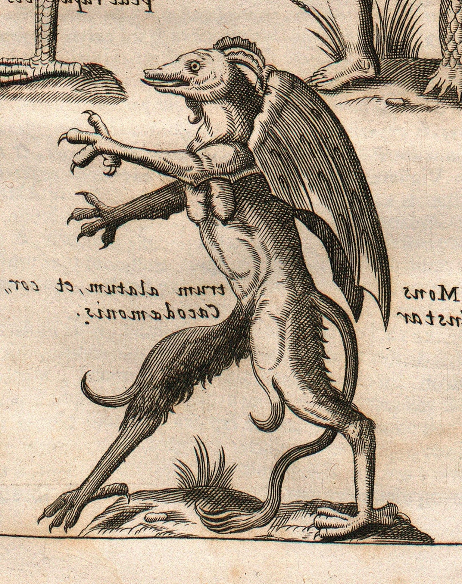
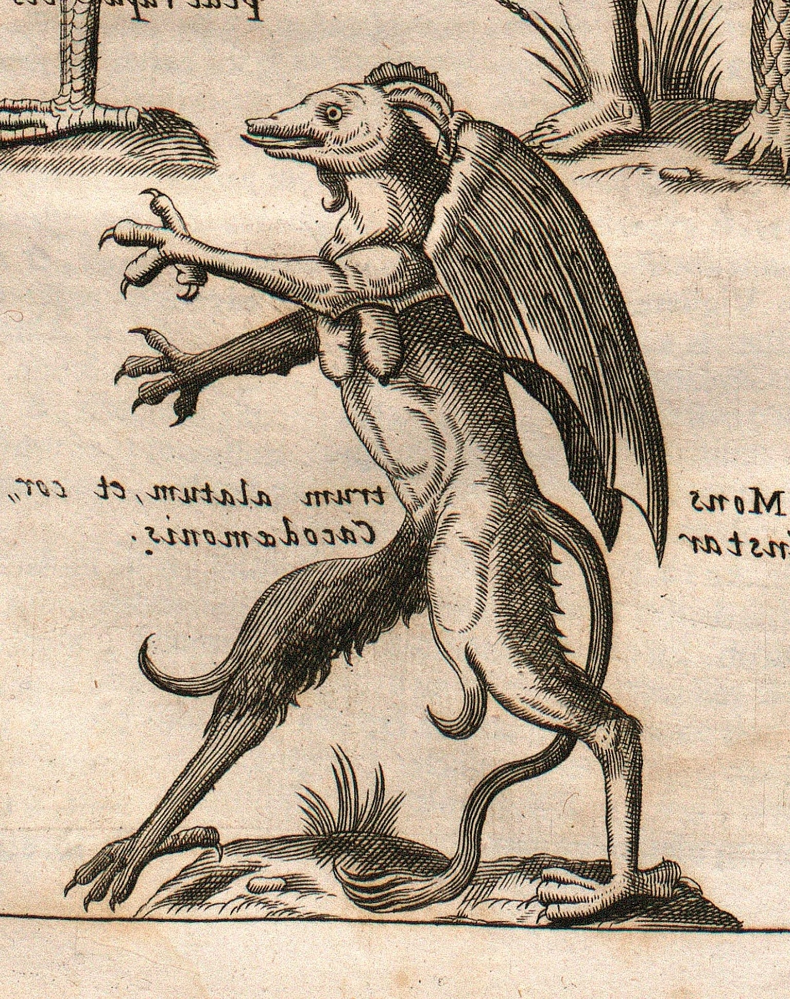

Jersey Devil Artwork Gallery
Being one of the most monstrous and jarring looking of cryptids, the Jersey Devil's unconventional appearance gives way for many artistic interpretations on its design.
Whether it be it's typical elongated-goat like form or more traditionally devilish interpretations, there truly is no mythological beast like it.
Click on any of the artworks that interest you to be taken to their original pages/links to artist!
 
